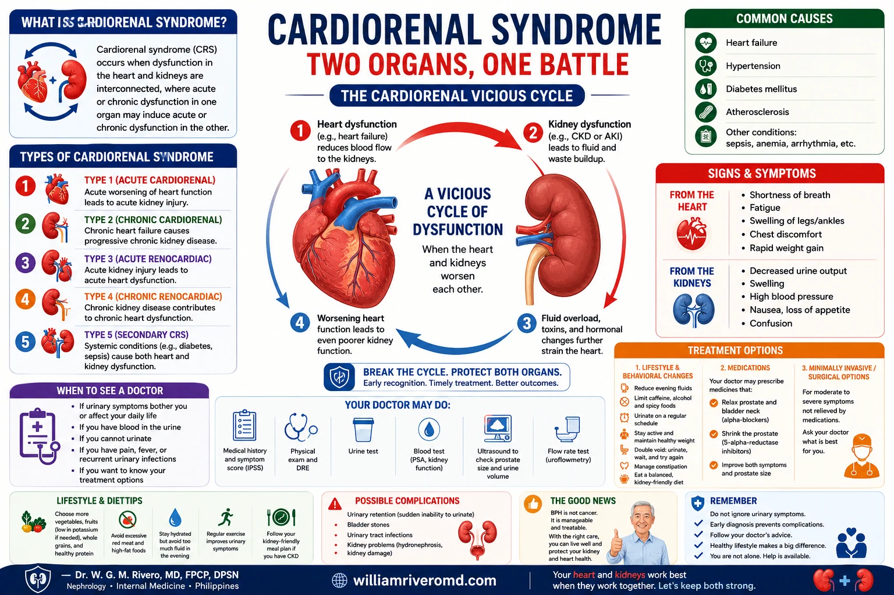
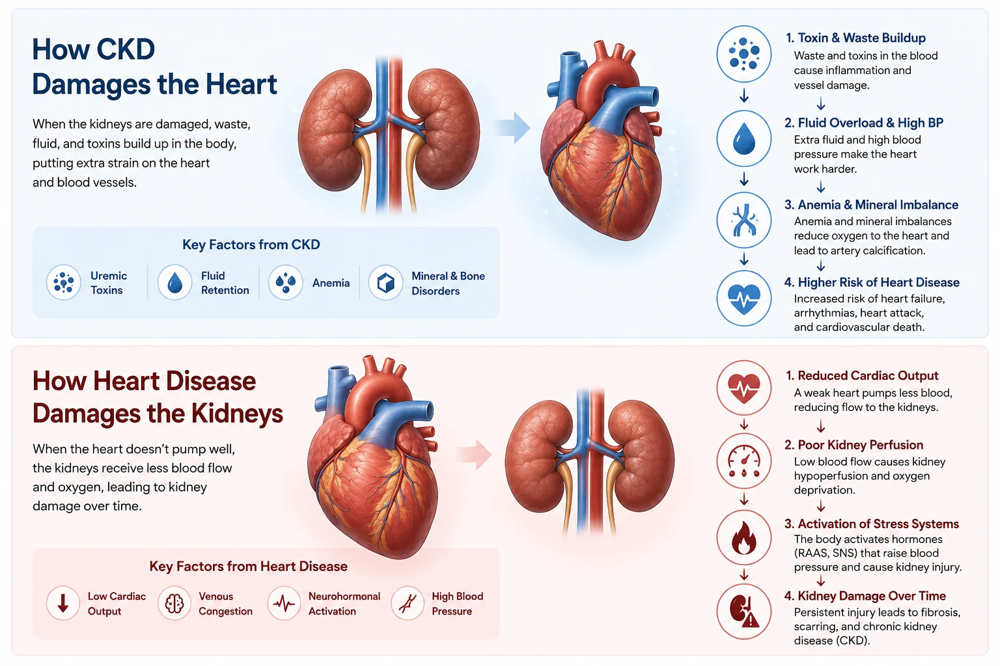
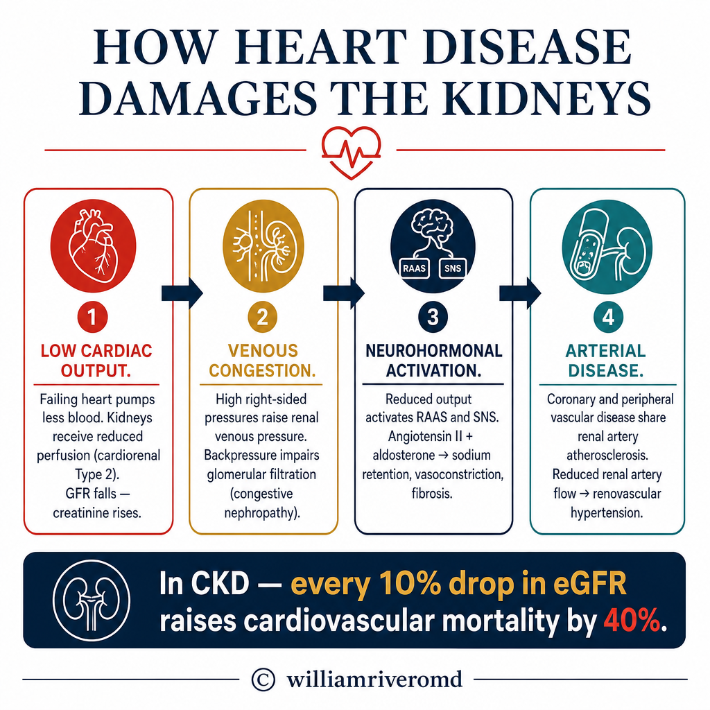
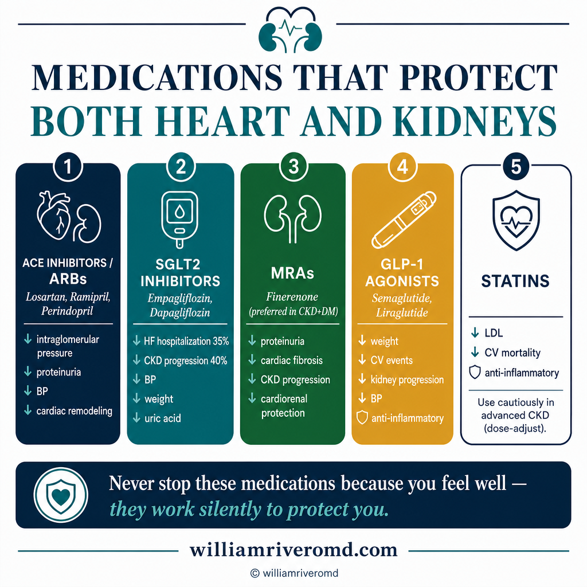
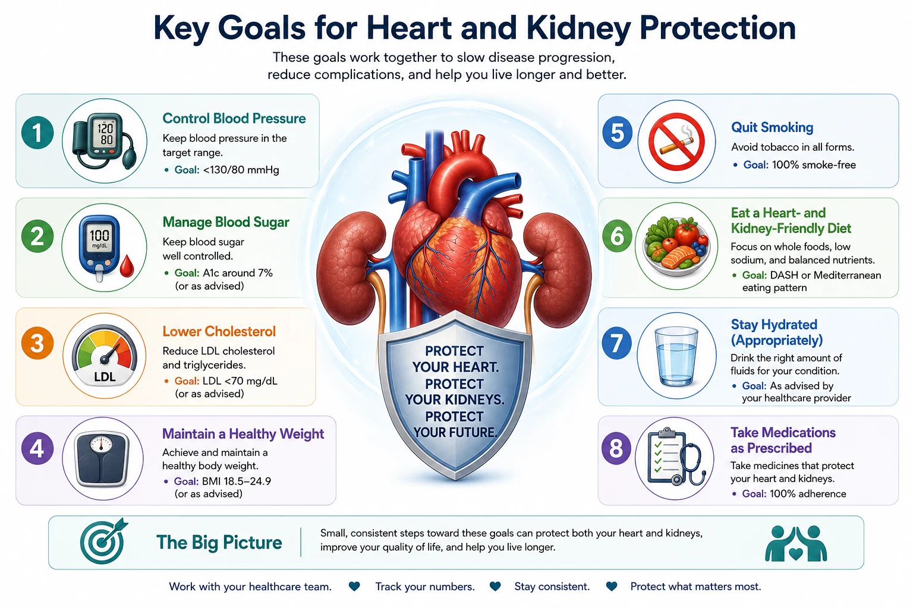
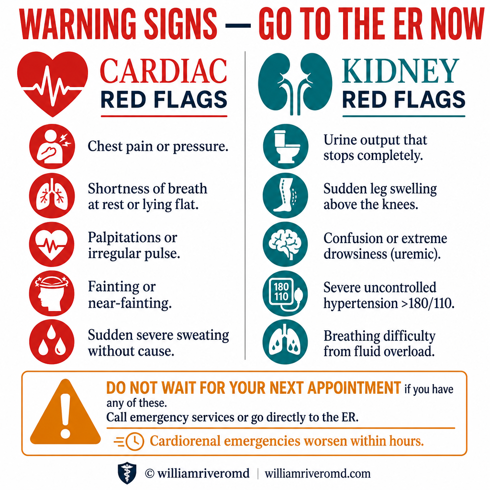

Cardiorenal Syndrome — Two Organs, One BattleCardiorenal Syndrome — Dalawang Organo, Isang LabananCardiorenal Syndrome — Duha ka Organo, Usa ka Pakig-away

The cardiorenal syndrome means that heart failure worsens kidney disease and kidney disease worsens heart failure — a reinforcing cycle. SGLT2 inhibitors are the first drug class proven to interrupt both sides simultaneously, with RAAS blockade as the established backbone.Ang cardiorenal syndrome ay nangangahulugang ang heart failure ay nagpapalala ng sakit sa bato at ang sakit sa bato ay nagpapalala ng heart failure — isang nagpapatibay na siklo. Ang mga SGLT2 inhibitor ay ang unang klase ng gamot na napatunayang nakakaputol sa magkabilang panig nang sabay-sabay, na ang RAAS blockade ang naitatag na pundasyon.Ang cardiorenal syndrome nagpasabot nga ang heart failure nagpagrabe sa sakit sa bato ug ang sakit sa bato nagpagrabe sa heart failure — usa ka nagpalig-on nga siklo. Ang mga SGLT2 inhibitor mao ang unang klase sa medisina nga napatunayang makaputol sa duha ka bahin sa dungan, nga ang RAAS blockade ang naitatag nga pundasyon.
Your heart and kidneys are physiologically inseparable. The heart pumps blood to the kidneys; the kidneys regulate blood volume, pressure, and electrolytes that determine how hard the heart must work. When one organ fails, it actively accelerates the failure of the other — creating a vicious cycle that must be interrupted simultaneously from both ends.Ang inyong puso at bato ay physiologically hindi mapaghihiwalay. Ang puso ay nagbobomba ng dugo sa mga bato; ang mga bato ay nag-aayos ng dami ng dugo, presyon, at mga electrolyte na nagtatakda kung gaano kahirap ang trabaho ng puso. Kapag nabigo ang isang organo, ito ay aktibong nagpapabilis ng pagkabigo ng isa pa — na lumilikha ng masamang siklo na dapat na maputol nang sabay-sabay mula sa magkabilang dulo.Ang inyong kasingkasing ug mga bato physiologically dili mabubulag. Ang kasingkasing nagabomba sa dugo ngadto sa mga bato; ang mga bato nagakontrola sa dami sa dugo, presyon, ug mga electrolyte nga nagtino kon unsa kakusog ang trabaho sa kasingkasing. Kon mobigo ang usa ka organo, kini aktibo nga nagpaabtik sa pagpalya sa usa pa — nagmugna og usa ka makasamok nga siklo nga kinahanglan mapugngan sa dungan gikan sa duha ka tumoy.
Cardiorenal syndrome (CRS) is the formal term for this bidirectional dysfunction. It is not simply "having both heart disease and kidney disease" — it is the recognition that each condition is mechanistically driving the other, and that treating them in isolation is inadequate.Ang cardiorenal syndrome (CRS) ang pormal na termino para sa bidirectional dysfunction na ito. Hindi lamang ito "pagkakaroon ng parehong sakit sa puso at sakit sa bato" — ito ay pagkilala na ang bawat kondisyon ay mekanistikong nagpapatakbo ng isa pa, at ang paggamot sa kanila nang hiwa-hiwalay ay hindi sapat.Ang cardiorenal syndrome (CRS) mao ang pormal nga termino alang niining bidirectional dysfunction. Dili lamang kini "pagkaadunay pareho nga sakit sa kasingkasing ug sakit sa bato" — kini ang pagkilala nga ang matag kondisyon mekanistikong nagmamaneho sa usa pa, ug ang pagtambal kanila nga bulag-bulag dili igo.
The statistics are soberingAng mga estadistika ay nagpapanatag ng isipAng mga estadistika nagpahinumdom
Cardiovascular disease is the leading cause of death in CKD patients — accounting for over 50% of all-cause mortality in dialysis patients. A 25-to-35-year-old on dialysis has a cardiovascular mortality risk equivalent to a 75-to-80-year-old in the general population.Ang cardiovascular disease ang nangungunang sanhi ng kamatayan sa mga pasyenteng may CKD — sumasaklaw ng higit sa 50% ng lahat ng pagkamatay sa mga pasyenteng nasa dialysis. Ang isang 25-hanggang-35-taong-gulang na nasa dialysis ay may cardiovascular mortality risk na katumbas ng isang 75-hanggang-80-taong-gulang sa pangkalahatang populasyon.Ang cardiovascular disease mao ang nanguna nga hinungdan sa kamatayon sa mga pasyente nga adunay CKD — nagkuwenta og labaw sa 50% sa tanan nga pagkamatay sa mga pasyente nga nag-dialysis. Ang usa ka 25-hangtud-35-ka-tuig ang edad nga nag-dialysis adunay cardiovascular mortality risk nga katumbas sa usa ka 75-hangtud-80-ka-tuig ang edad sa kinatibuk-ang populasyon.
The flip sideAng kabilang panigAng pikas bahin
Effective treatment of heart failure causes reduced kidney perfusion, worsening kidney function. Effective treatment of fluid overload can drop blood pressure too low, causing AKI. Managing both simultaneously requires expertise and constant balancing — which is why nephrologist-cardiologist collaboration is so important.Ang epektibong paggamot ng heart failure ay nagdudulot ng nabawasang perfusion ng bato, na nagpapalala ng tungkulin ng bato. Ang epektibong paggamot ng labis na likido ay maaaring magpababa ng presyon ng dugo nang masyadong mababa, na nagdudulot ng AKI. Ang pamamahala ng pareho nang sabay-sabay ay nangangailangan ng kadalubhasaan at patuloy na pagbabalanse — kaya naman napakahalaga ng pakikipagtulungan ng nephrologist at cardiologist.Ang epektibong pagtambal sa heart failure nagdala sa pagkunhod sa perfusion sa bato, nga nagpagrabe sa tungkulin sa bato. Ang epektibong pagtambal sa sobra nga likido mahimong mopababa sa presyon sa dugo nga labaw nga ubos, nga nagdala sa AKI. Ang pagdumala sa duha sa dungan nanginahanglan og kahanas ug kanunay nga pagbalansi — mao kini ngano nga ang pakigtambayayong sa nephrologist ug cardiologist kamahinungdanon.
The Cardiorenal Vicious CycleAng Masamang Siklo ng CardiorenalAng Makasamok nga Siklo sa Cardiorenal
CKD causes fluid retention and sodium overload → raises blood pressureAng CKD ay nagdudulot ng pagtatago ng likido at labis na sodium → nagpapataas ng presyon ng dugoAng CKD nagdala sa pagpugong sa likido ug sobra nga sodium → nagpataas sa presyon sa dugo
Hypertension forces the heart to pump harder → left ventricular hypertrophyAng hypertension ay pinipilit ang puso na mag-bomba nang mas malakas → left ventricular hypertrophyAng hypertension nagpugos sa kasingkasing nga mobomba nga mas kusog → left ventricular hypertrophy
Stiffened, enlarged heart pumps less efficiently → reduced cardiac outputAng natigás at lumaki na puso ay mas hindi mahusay na nagbo-bomba → nabawasang cardiac outputAng nagtig-a ug nagpadako nga kasingkasing nagbomba nga dili kaayo episyente → pagkunhod sa cardiac output
Reduced cardiac output lowers kidney perfusion → further kidney injuryAng nabawasang cardiac output ay nagpapababa ng perfusion ng bato → karagdagang pinsala sa batoAng pagkunhod sa cardiac output nagpababa sa perfusion sa bato → dugang nga kadaot sa bato
Worsening kidney function raises BP, anemia, and uremic toxins → returns to Step 1Ang lumalalang tungkulin ng bato ay nagpapataas ng BP, anemia, at mga uremic toxin → bumabalik sa Hakbang 1Ang nagpagrabe nga tungkulin sa bato nagpataas sa BP, anemia, ug mga uremic toxin → mobalik sa Lakang 1
How CKD Damages the HeartPaano Nasisira ng CKD ang PusoUnsaon sa CKD Pagdaot sa Kasingkasing

CKD does not simply "raise blood pressure" and leave the rest to chance. It actively damages the cardiovascular system through multiple simultaneous pathways — many of which operate silently for years.Ang CKD ay hindi lamang "nagpapataas ng presyon ng dugo" at iniiwan ang natitirang bahagi sa pagkakataon. Aktibo nitong nasisira ang cardiovascular system sa pamamagitan ng maraming sabay-sabay na landas — marami sa mga ito ay tahimik na gumagana sa loob ng maraming taon.Ang CKD dili lamang "nagpataas sa presyon sa dugo" ug gibilin ang uban nga bahin sa kahigayonan. Aktibo niini nga ginadaot ang cardiovascular system pinaagi sa daghang sabay-sabay nga mga dalan — daghan niini hilom nga nagtrabaho sulod sa daghang tuig.
Hypertension and volume overloadHypertension at labis na dami ng likidoHypertension ug sobra nga dami sa likido
Failing kidneys retain sodium and water, expanding blood volume. This raises blood pressure and forces the heart to work against higher resistance with every beat. Over time, the left ventricle hypertrophies (thickens) and eventually stiffens — a condition called left ventricular hypertrophy (LVH), present in over 75% of dialysis patients.Ang nabigong mga bato ay nagtatago ng sodium at tubig, na nagpapalawak ng dami ng dugo. Pinapataas nito ang presyon ng dugo at pinipilit ang puso na magtrabaho laban sa mas mataas na resistensya sa bawat tibok. Sa paglipas ng panahon, ang kaliwang ventricle ay hypertrophies (lumaki at lumapot) at sa huli ay nagiging matigas — isang kondisyong tinatawag na left ventricular hypertrophy (LVH), na nasa higit sa 75% ng mga pasyenteng nasa dialysis.Ang mga nabigong bato nagpugong sa sodium ug tubig, nagpapadako sa dami sa dugo. Kini nagpataas sa presyon sa dugo ug nagpugos sa kasingkasing nga magtrabaho batok sa mas taas nga resistensya sa matag bukto. Sa paglabay sa panahon, ang wala nga ventricle hypertrophies (nagpadako ug nagpalapot) ug sa katapusan nagtig-a — usa ka kondisyon nga gitawag nga left ventricular hypertrophy (LVH), anaa sa labaw sa 75% sa mga pasyente nga nag-dialysis.
Anemia — the silent cardiac stressorAnemia — ang tahimik na cardiac stressorAnemia — ang hilom nga cardiac stressor
CKD reduces erythropoietin production, causing anemia. The heart compensates for reduced oxygen delivery by increasing cardiac output — beating faster and harder. Chronic anemia causes the heart to enlarge (dilated cardiomyopathy) and is an independent risk factor for heart failure and cardiovascular death in CKD patients.Ang CKD ay nagpapababa ng produksyon ng erythropoietin, na nagdudulot ng anemia. Ang puso ay nagkokompensasyon para sa nabawasang paghahatid ng oxygen sa pamamagitan ng pagpapataas ng cardiac output — titibok nang mas mabilis at mas malakas. Ang matagal na anemia ay nagdudulot ng pagpalaki ng puso (dilated cardiomyopathy) at isang independiyenteng risk factor para sa heart failure at cardiovascular death sa mga pasyenteng may CKD.Ang CKD nagpababa sa produksyon sa erythropoietin, nagdala sa anemia. Ang kasingkasing nagkompensasyon para sa pagkunhod sa paghatod sa oxygen pinaagi sa pagdugang sa cardiac output — nagbukto nga mas paspas ug mas kusog. Ang kronikong anemia nagpadako sa kasingkasing (dilated cardiomyopathy) ug usa ka independyenteng risk factor alang sa heart failure ug cardiovascular death sa mga pasyente nga adunay CKD.
Vascular calcification from mineral bone disorderVascular calcification mula sa mineral bone disorderVascular calcification gikan sa mineral bone disorder
Elevated phosphorus, secondary hyperparathyroidism, and altered vitamin D metabolism promote calcium-phosphate deposition in arterial walls. This calcification causes arteries to stiffen (arteriosclerosis) — raising pulse pressure and accelerating atherosclerosis. Calcified coronary arteries are present in the majority of dialysis patients.Ang mataas na phosphorus, secondary hyperparathyroidism, at nagbagong metabolismo ng vitamin D ay nagtataguyod ng deposisyon ng calcium-phosphate sa mga dingding ng ugat. Ang calcification na ito ay nagdudulot ng pagiging matigas ng mga ugat (arteriosclerosis) — nagpapataas ng pulse pressure at nagpapabilis ng atherosclerosis. Ang mga calcified na coronary artery ay nasa karamihan ng mga pasyenteng nasa dialysis.Ang taas nga phosphorus, secondary hyperparathyroidism, ug gibag-o nga metabolismo sa vitamin D nagpasibu sa deposisyon sa calcium-phosphate sa mga bungbong sa ugat. Kining calcification nagpahimo sa mga ugat nga magtig-a (arteriosclerosis) — nagpataas sa pulse pressure ug nagpaabtik sa atherosclerosis. Ang mga calcified nga coronary artery anaa sa kadaghanan sa mga pasyente nga nag-dialysis.
Uremic toxins and chronic inflammationMga uremic toxin at matagal na pamamagaMga uremic toxin ug kronikong pamamaga
Uremic toxins — particularly indoxyl sulfate and p-cresol sulfate — are directly cardiotoxic. They damage endothelial cells, promote oxidative stress, accelerate atherosclerosis, and impair cardiac muscle function. These protein-bound toxins are poorly cleared by standard hemodialysis, which is why gut-kidney axis interventions (probiotics, fiber) are increasingly recognized as cardiorenal protective tools.Ang mga uremic toxin — partikular na ang indoxyl sulfate at p-cresol sulfate — ay direktang nakakalason sa puso. Nasisira nila ang mga endothelial cell, nagtataguyod ng oxidative stress, nagpapabilis ng atherosclerosis, at nagpapahina ng tungkulin ng kalamnan ng puso. Ang mga toxin na nakatali sa protein na ito ay hindi mahusay na nililinis ng standard hemodialysis, kaya naman ang mga interbensyon sa gut-kidney axis (probiotics, fiber) ay lalong kinikilala bilang mga cardiorenal protective na kagamitan.Ang mga uremic toxin — labi na ang indoxyl sulfate ug p-cresol sulfate — direkta nga cardiotoxic. Ginadaot nila ang mga endothelial cell, nagpasibu sa oxidative stress, nagpaabtik sa atherosclerosis, ug nagpahuyang sa tungkulin sa kalamnan sa kasingkasing. Kining mga toxin nga nakatali sa protein dili maayo nga nalimpyuhan sa standard hemodialysis, mao kini ngano nga ang mga interbensyon sa gut-kidney axis (probiotics, fiber) lalong gikilala ingon mga cardiorenal protective nga himan.
Electrolyte imbalances and arrhythmiaMga electrolyte imbalance at arrhythmiaMga electrolyte imbalance ug arrhythmia
Hyperkalemia (high potassium) from CKD directly alters the cardiac electrical conduction system — causing dangerous arrhythmias including ventricular fibrillation and sudden cardiac death. This is why potassium control is treated with extreme seriousness in CKD and dialysis patients. Metabolic acidosis compounds this by shifting potassium out of cells into the bloodstream.Ang hyperkalemia (mataas na potassium) mula sa CKD ay direktang nagbabago ng cardiac electrical conduction system — nagdudulot ng mapanganib na mga arrhythmia kabilang ang ventricular fibrillation at biglaang pagkamatay ng puso. Kaya naman ang kontrol ng potassium ay tinatrato nang may matinding pagiging seryoso sa mga pasyenteng may CKD at dialysis. Ang metabolic acidosis ay nagpapalala nito sa pamamagitan ng paglilipat ng potassium mula sa mga cell papunta sa daluyan ng dugo.Ang hyperkalemia (taas nga potassium) gikan sa CKD direkta nga nagbag-o sa cardiac electrical conduction system — nagdala sa mga delikadong arrhythmia lakip ang ventricular fibrillation ug kalit nga pagkamatay sa kasingkasing. Mao kini ngano nga ang kontrol sa potassium gitambal nga adunay hilabihang kaseriosohan sa mga pasyente nga adunay CKD ug dialysis. Ang metabolic acidosis nagpagrabe niini pinaagi sa paglipat sa potassium gikan sa mga cell ngadto sa daluyan sa dugo.
How Heart Disease Damages the KidneysPaano Nasisira ng Sakit sa Puso ang mga BatoUnsaon sa Sakit sa Kasingkasing Pagdaot sa mga Bato

Reduced kidney perfusionNabawasang perfusion ng batoPagkunhod sa perfusion sa bato
In heart failure, the weakened heart pumps less blood forward. Kidney blood flow falls — triggering RAAS activation, sodium retention, and progressively worsening kidney function. This is "forward failure" causing cardiorenal syndrome Type 1 and 2.Sa heart failure, ang pinahinang puso ay nagbo-bomba ng mas kaunting dugo pasulong. Ang daloy ng dugo sa bato ay bumababa — nagtatrigger ng RAAS activation, pagtatago ng sodium, at progresibong pagpalala ng tungkulin ng bato. Ito ang "forward failure" na nagdudulot ng cardiorenal syndrome Type 1 at 2.Sa heart failure, ang nagpahuyang kasingkasing nagbomba og diyutay nga dugo padulong. Ang daloy sa dugo sa bato moubos — nagtrigger sa RAAS activation, pagpugong sa sodium, ug progresibong pagpagrabe sa tungkulin sa bato. Kini ang "forward failure" nga nagdala sa cardiorenal syndrome Type 1 ug 2.
Venous congestionVenous congestionVenous congestion
Fluid backs up from a failing right ventricle into the venous circulation, raising renal venous pressure. This directly impairs glomerular filtration — the kidney cannot filter against a "back pressure." Decongestion (diuretics, ultrafiltration) is as important as improving cardiac output.Ang likido ay bumabalik mula sa nabigong kanang ventricle patungo sa venous circulation, na nagpapataas ng renal venous pressure. Direkta nitong napipigilan ang glomerular filtration — ang bato ay hindi makakapagsala laban sa "back pressure." Ang decongestion (diuretics, ultrafiltration) ay kasinghalaga ng pagpapabuti ng cardiac output.Ang likido mobalik gikan sa nabigong tuo nga ventricle ngadto sa venous circulation, nagpataas sa renal venous pressure. Direkta niining gipahuyang ang glomerular filtration — ang bato dili makasala batok sa "back pressure." Ang decongestion (diuretics, ultrafiltration) kasingkahalagang ang pagpaayo sa cardiac output.
Neurohormonal activationNeurohormonal activationNeurohormonal activation
Heart failure activates the sympathetic nervous system and RAAS — causing renal vasoconstriction, sodium and water retention, and progressive kidney scarring. This neurohormonal storm is the primary target of ACE inhibitors, ARBs, and beta-blockers in heart failure with CKD.Ang heart failure ay nag-a-activate ng sympathetic nervous system at RAAS — nagdudulot ng renal vasoconstriction, pagtatago ng sodium at tubig, at progresibong pagkapeklat ng bato. Ang neurohormonal storm na ito ang pangunahing target ng mga ACE inhibitor, ARB, at beta-blocker sa heart failure na may CKD.Ang heart failure nag-activate sa sympathetic nervous system ug RAAS — nagdala sa renal vasoconstriction, pagpugong sa sodium ug tubig, ug progresibong pagpeklat sa bato. Kining neurohormonal storm mao ang pangunahing target sa mga ACE inhibitor, ARB, ug beta-blocker sa heart failure nga adunay CKD.
Atrial fibrillationAtrial fibrillationAtrial fibrillation
AFib reduces cardiac output by 20–30% (loss of atrial kick). This impairs renal perfusion and is independently associated with CKD progression. Anticoagulation in AFib+CKD requires careful balancing — bleeding risk is higher as eGFR declines.Ang AFib ay nagpapababa ng cardiac output ng 20–30% (pagkawala ng atrial kick). Nagpapahina nito ang renal perfusion at independiyenteng nauugnay sa pag-unlad ng CKD. Ang anticoagulation sa AFib+CKD ay nangangailangan ng maingat na pagbabalanse — mas mataas ang panganib ng pagdurugo habang bumababa ang eGFR.Ang AFib nagpababa sa cardiac output og 20–30% (pagkawala sa atrial kick). Kini nagpahuyang sa renal perfusion ug independyenteng nalangkit sa pag-uswag sa CKD. Ang anticoagulation sa AFib+CKD nanginahanglan og maampingong pagbalansi — mas taas ang risgo sa pagdugo samtang mopaubos ang eGFR.
Contrast nephropathyContrast nephropathyContrast nephropathy
Cardiac procedures (angiography, CT with contrast) use iodinated contrast that can cause acute kidney injury — especially in pre-existing CKD. Always inform every cardiologist and interventionist of your kidney status before any procedure.Ang mga cardiac procedure (angiography, CT na may contrast) ay gumagamit ng iodinated contrast na maaaring magdulot ng acute kidney injury — lalo na sa pre-existing CKD. Palaging ipaalam sa bawat cardiologist at interventionist ang katayuan ng inyong bato bago ang anumang procedure.Ang mga cardiac procedure (angiography, CT nga adunay contrast) naggamit sa iodinated contrast nga mahimong magdala sa acute kidney injury — labi na sa pre-existing CKD. Kanunay ipahibalo sa matag cardiologist ug interventionist ang kahimtang sa inyong bato sa wala pa ang bisan unsang procedure.
Shared Risk Factors — Treat the Root, Protect Both OrgansMga Ibinahaging Risk Factor — Gamutin ang Ugat, Protektahan ang Parehong OrganoMga Giambit nga Risk Factor — Tambalon ang Ugat, Panalipdan ang Duha ka Organo

Heart disease and kidney disease are driven by the same upstream risk factors. Addressing these simultaneously is the most powerful intervention available.Ang sakit sa puso at sakit sa bato ay pinapatakbo ng parehong mga risk factor sa itaas. Ang pagtugon sa mga ito nang sabay-sabay ang pinakamakapangyarihang interbensyon na available.Ang sakit sa kasingkasing ug sakit sa bato ginamaneho sa pareho nga mga risk factor sa itaas. Ang pagtubag niini sa dungan mao ang labing gamhanang interbensyon nga magamit.
| Risk FactorRisk FactorRisk Factor | Kidney damage mechanismMekanismo ng pinsala sa batoMekanismo sa kadaot sa bato | Cardiac damage mechanismMekanismo ng pinsala sa pusoMekanismo sa kadaot sa kasingkasing | Primary interventionPangunahing interbensyonPanguna nga interbensyon |
|---|---|---|---|
| HypertensionHypertensionHypertension | Glomerular hypertension → nephrosclerosis → CKDGlomerular hypertension → nephrosclerosis → CKDGlomerular hypertension → nephrosclerosis → CKD | LV hypertrophy → heart failure; accelerated atherosclerosisLV hypertrophy → heart failure; pinabilis na atherosclerosisLV hypertrophy → heart failure; gipadali nga atherosclerosis | ACE inhibitor / ARB + lifestyle. Target <140/90 (<130/80 with CKD/DM)ACE inhibitor / ARB + pamumuhay. Target <140/90 (<130/80 na may CKD/DM)ACE inhibitor / ARB + pamumuhay. Target <140/90 (<130/80 nga adunay CKD/DM) |
| Diabetes MellitusDiabetes MellitusDiabetes Mellitus | Diabetic nephropathy → proteinuria → ESKDDiabetic nephropathy → proteinuria → ESKDDiabetic nephropathy → proteinuria → ESKD | Endothelial dysfunction → coronary artery disease; cardiomyopathyEndothelial dysfunction → coronary artery disease; cardiomyopathyEndothelial dysfunction → coronary artery disease; cardiomyopathy | SGLT2 inhibitor (protects both) + HbA1c 7–8% + statinSGLT2 inhibitor (nagpoprotekta sa dalawa) + HbA1c 7–8% + statinSGLT2 inhibitor (nagpanalipod sa duha) + HbA1c 7–8% + statin |
| DyslipidemiaDyslipidemiaDyslipidemia | Lipid deposition in glomeruli (glomerulopathy); accelerates CKD progressionDeposisyon ng lipid sa glomeruli (glomerulopathy); nagpapabilis ng pag-unlad ng CKDDeposisyon sa lipid sa glomeruli (glomerulopathy); nagpaabtik sa pag-uswag sa CKD | Atherosclerotic plaque → MI, stroke, sudden deathAtherosclerotic plaque → MI, stroke, biglaang kamatayanAtherosclerotic plaque → MI, stroke, kalit nga kamatayon | High-intensity statin; target LDL <55 mg/dL in CKD (very high risk)High-intensity statin; target LDL <55 mg/dL sa CKD (napakataas na panganib)High-intensity statin; target LDL <55 mg/dL sa CKD (hilabihang taas nga risgo) |
| ObesityObesityObesity | Glomerular hyperfiltration → protein leak → CKDGlomerular hyperfiltration → pagtulo ng protein → CKDGlomerular hyperfiltration → pagtulo sa protein → CKD | Metabolic syndrome → insulin resistance → CADMetabolic syndrome → insulin resistance → CADMetabolic syndrome → insulin resistance → CAD | GLP-1 receptor agonists (semaglutide) + lifestyle; SGLT2iGLP-1 receptor agonists (semaglutide) + pamumuhay; SGLT2iGLP-1 receptor agonists (semaglutide) + pamumuhay; SGLT2i |
| SmokingPaninigarilyoPagpanigarilyo | Renal vasoconstriction → ischemic nephropathyRenal vasoconstriction → ischemic nephropathyRenal vasoconstriction → ischemic nephropathy | Endothelial damage → accelerated atherosclerosisPinsala sa endothelial → pinabilis na atherosclerosisKadaot sa endothelial → gipadali nga atherosclerosis | Complete cessation — the single highest-impact modifiable risk factorKumpletong pagtigil — ang natatanging modifiable risk factor na may pinakamataas na epektoKompleto nga paghunong — ang nag-iisang modifiable risk factor nga adunay labing taas nga epekto |
| AnemiaAnemiaAnemia | Reduced renal oxygenation → tubular injuryNabawasang oxygenation ng bato → pinsala sa tubularPagkunhod sa oxygenation sa bato → kadaot sa tubular | Compensatory high cardiac output → cardiac remodelingCompensatory na mataas na cardiac output → cardiac remodelingCompensatory nga taas nga cardiac output → cardiac remodeling | ESA + IV iron to maintain Hgb 100–115 g/LESA + IV iron para mapanatili ang Hgb 100–115 g/LESA + IV iron aron mapadayon ang Hgb 100–115 g/L |
Medications That Protect Both Heart and KidneysMga Gamot na Nagpoprotekta sa Parehong Puso at BatoMga Medisina nga Nagpanalipod sa Kasingkasing ug mga Bato

The most exciting advance in cardiorenal medicine over the past decade is the recognition that several drug classes provide simultaneous, independent protection to both organs. These are not just blood pressure or sugar pills — they are organ-protective agents.Ang pinaka-kapana-panabik na pag-unlad sa cardiorenal medicine sa nakalipas na dekada ay ang pagkilala na ilang mga klase ng gamot ang nagbibigay ng sabay-sabay, independiyenteng proteksyon sa parehong mga organo. Hindi lamang ito mga tableta para sa presyon ng dugo o asukal — sila ay mga organ-protective na ahente.Ang labing kapana-panabik nga pag-uswag sa cardiorenal medicine sa nakalabay nga dekada mao ang pagkilala nga pipila ka mga klase sa medisina naghatag sa dungan, independyenteng proteksyon sa duha ka organo. Kini dili lamang mga tableta para sa presyon sa dugo o asukar — kini mga organ-protective nga ahente.
The creatinine bump with ACE inhibitors — do not panicAng pagtaas ng creatinine sa ACE inhibitors — huwag mag-panicAng pagtaas sa creatinine sa ACE inhibitors — ayaw magkalisang
Starting an ACE inhibitor or ARB often causes a modest rise in creatinine (up to 30% from baseline) in the first 2 weeks. This reflects reduced intraglomerular pressure — a beneficial, intended effect. Do not stop the medication for this reason alone. A rise greater than 30%, or a potassium above 5.5 mEq/L, warrants prompt medical review.Ang pagsisimula ng ACE inhibitor o ARB ay kadalasang nagdudulot ng katamtamang pagtaas ng creatinine (hanggang 30% mula sa baseline) sa unang 2 linggo. Ito ay sumasalamin sa nabawasang intraglomerular pressure — isang kapaki-pakinabang at nilalayong epekto. Huwag ihinto ang gamot sa kadahilanang ito lamang. Ang pagtaas na higit sa 30%, o potassium na higit sa 5.5 mEq/L, ay nangangailangan ng mabilis na medikal na pagsusuri.Ang pagsugod sa ACE inhibitor o ARB kasagaran nagdala sa katamtamang pagtaas sa creatinine (hangtud sa 30% gikan sa baseline) sa unang 2 ka semana. Kini nagpakita sa pagkunhod sa intraglomerular pressure — usa ka mapuslanon, gituyo nga epekto. Ayaw ihunong ang medisina tungod niining rason lamang. Ang pagtaas nga labaw sa 30%, o potassium nga labaw sa 5.5 mEq/L, nanginahanglan og dali nga medikal nga pagsusi.
Key Goals for Heart and Kidney ProtectionMga Pangunahing Layunin para sa Proteksyon ng Puso at BatoMga Yawe nga Tumong alang sa Proteksyon sa Kasingkasing ug Bato

| ParameterParameterParameter | TargetTargetTarget | Why it protects both organsBakit nagpoprotekta sa parehong organoNgano nga nagpanalipod sa duha ka organo |
|---|---|---|
| Blood pressurePresyon ng dugoPresyon sa dugo | <140/90 (<130/80 with CKD/DM) | Reduces glomerular pressure AND cardiac afterload simultaneouslyNagpapababa ng glomerular pressure AT cardiac afterload nang sabay-sabayNagpababa sa glomerular pressure UG cardiac afterload sa dungan |
| LDL cholesterolLDL cholesterolLDL cholesterol | <55 mg/dL (very high-risk CKD) | Slows atherosclerosis in both coronary and renal arteriesNagpapabagal ng atherosclerosis sa parehong coronary at renal arteryNagpahinay sa atherosclerosis sa pareho nga coronary ug renal artery |
| HbA1c (if diabetic)HbA1c (kung may diabetes)HbA1c (kon adunay diabetes) | 7–8% in CKD | Reduces endothelial damage, diabetic nephropathy, and cardiomyopathyNagpapababa ng pinsala sa endothelial, diabetic nephropathy, at cardiomyopathyNagpababa sa kadaot sa endothelial, diabetic nephropathy, ug cardiomyopathy |
| HemoglobinHemoglobinHemoglobin | 100–115 g/L | Reduces cardiac workload and prevents LV remodelingNagpapababa ng cardiac workload at pinipigilan ang LV remodelingNagpababa sa cardiac workload ug gipugngan ang LV remodeling |
| Potassium (pre-HD)Potassium (bago ang HD)Potassium (sa wala pa ang HD) | 3.5–5.5 mEq/L | Prevents life-threatening ventricular arrhythmiasPinipigilan ang mapanganib sa buhay na ventricular arrhythmiaGipugngan ang delikadong ventricular arrhythmia |
| Calcium-Phosphorus productCalcium-Phosphorus productCalcium-Phosphorus product | <55 mg²/dL² | Prevents vascular calcification in both coronary and renal arteriesPinipigilan ang vascular calcification sa parehong coronary at renal arteryGipugngan ang vascular calcification sa pareho nga coronary ug renal artery |
| Body weightTimbang ng katawanTimbang sa lawas | BMI 18.5–25 kg/m² | Each kg lost reduces intraglomerular pressure AND cardiac preloadAng bawat kg na nawala ay nagpapababa ng intraglomerular pressure AT cardiac preloadAng matag kg nga nawala nagpababa sa intraglomerular pressure UG cardiac preload |
| ProteinuriaProteinuriaProteinuria | UACR <30, or reduce by ≥30% | Proteinuria is an independent cardiac risk marker — reducing it protects bothAng proteinuria ay isang independiyenteng cardiac risk marker — ang pagbabawas nito ay nagpoprotekta sa dalawaAng proteinuria usa ka independyenteng cardiac risk marker — ang pagkunhod niini nagpanalipod sa duha |
When to Seek Immediate CareKailan Humingi ng Agarang Pag-aalagaKanus-a Mangita og Dayon nga Pag-atiman

⚠ Go to the ER or call your doctor immediately for any of these:Pumunta sa ER o tumawag agad sa inyong doktor para sa alinman sa mga ito:Adto sa ER o tawagan dayon ang inyong doktor alang sa bisan hisang niini:
Cardiorenal Risk Calculator — CRS Classifier & Volume Overload AssessmentCardiorenal Risk Calculator — CRS Classifier at Pagtatasa ng Labis na Dami ng LikidoCardiorenal Risk Calculator — CRS Classifier ug Pagtasa sa Sobra nga Dami sa Likido
Classify the type of cardiorenal syndrome affecting your patient, estimate the degree of fluid overload, and determine the monitoring intensity and treatment urgency based on combined cardiac and renal function.I-classify ang uri ng cardiorenal syndrome na nakakaapekto sa inyong pasyente, tantyahin ang antas ng labis na likido, at tukuyin ang intensity ng pagsubaybay at urgency ng paggamot batay sa pinagsama na cardiac at renal function.I-classify ang klase sa cardiorenal syndrome nga nakaapekto sa inyong pasyente, taksay-i ang grado sa sobra nga likido, ug tukuya ang intensity sa pagbantay ug urgency sa pagtambal base sa pinagsama nga cardiac ug renal function.
⚕ Cardiorenal syndrome (CRS) classification per Ronco et al. (JACC 2008), endorsed by KDIGO. BNP thresholds adjusted for CKD — BNP and NT-proBNP are chronically elevated in CKD independent of fluid status, so higher thresholds apply. This tool provides clinical framework support — cardiorenal management requires combined nephrology and cardiology assessment.
Frequently Asked QuestionsMga Madalas na ItanongMga Kanunay nga Gipangutana
I have both heart failure and CKD — how can diuretics help one without hurting the other?Mayroon akong parehong heart failure at CKD — paano matutulungan ng mga diuretic ang isa nang hindi nasasaktang ang isa pa?Adunay akoy pareho nga heart failure ug CKD — unsaon sa mga diuretic pagtabang sa usa nga dili makadaot sa usa pa?
This is one of the most challenging clinical balancing acts in medicine. Diuretics relieve fluid congestion (protecting the heart) but can reduce kidney perfusion if overused (worsening CKD). The key is decongestion to dry weight without volume depletion — guided by daily weights, urine output, and serial creatinine. SGLT2 inhibitors now provide gentle, safe natriuresis that works in this setting without the creatinine risk of aggressive loop diuretics.Ito ay isa sa pinaka-mapaghamong klinikal na pagbabalanse sa medisina. Ang mga diuretic ay nagpapagaan ng congestion ng likido (nagpoprotekta sa puso) ngunit maaaring magpababa ng kidney perfusion kung sobra ang gamit (nagpapalala ng CKD). Ang susi ay decongestion hanggang sa dry weight nang walang volume depletion — ginagabayan ng pang-araw-araw na timbang, dami ng ihi, at serial creatinine. Ang mga SGLT2 inhibitor ay nagbibigay ngayon ng maamo, ligtas na natriuresis na gumagana sa ganitong sitwasyon nang walang panganib ng creatinine ng aggressive na loop diuretics.Kini usa sa labing mapaghamong klinikal nga pagbalansi sa medisina. Ang mga diuretic nagpainum sa congestion sa likido (nagpanalipod sa kasingkasing) apan mahimong magpababa sa kidney perfusion kon sobra ang paggamit (nagpagrabe sa CKD). Ang yawe mao ang decongestion hangtud sa dry weight nga walay volume depletion — gipiyalan sa inadlaw nga timbang, gidaghanon sa ihi, ug serial creatinine. Ang mga SGLT2 inhibitor karon naghatag ug humok, luwas nga natriuresis nga nagtrabaho niining kahimtanga nga walay risgo sa creatinine sa aggressive nga loop diuretics.
My cardiologist and nephrologist give different advice — who should I follow?Ang aking cardiologist at nephrologist ay nagbibigay ng magkaibang payo — sino ang dapat kong sundin?Ang akong cardiologist ug nephrologist naghatag og lain-laing tambag — kinsa ang akong sundon?
This tension is real and common. The best solution is a unified care conference where both specialists communicate directly. Your nephrologist manages fluid balance, potassium, and medications affecting kidney function; your cardiologist manages rhythm, cardiac function, and coronary risk. Both perspectives are essential — advocate for coordinated care, and bring your complete medication list to every appointment.Ang tensyon na ito ay tunay at karaniwan. Ang pinakamahusay na solusyon ay isang pinagsamang care conference kung saan ang parehong espesyalista ay direktang nakikipag-usap. Ang inyong nephrologist ay namamahala ng balanse ng likido, potassium, at mga gamot na nakakaapekto sa tungkulin ng bato; ang inyong cardiologist ay namamahala ng ritmo, cardiac function, at coronary risk. Ang parehong pananaw ay mahalaga — itaguyod ang coordinated care, at dalhin ang kumpletong listahan ng inyong mga gamot sa bawat appointment.Kining tensyon tinuod ug komon. Ang labing maayong solusyon usa ka nagkahiusa nga care conference diin ang duha ka espesyalista direkta nga nakig-komunikasyon. Ang inyong nephrologist nagdumala sa balanse sa likido, potassium, ug mga medisina nga nakaapekto sa tungkulin sa bato; ang inyong cardiologist nagdumala sa ritmo, cardiac function, ug coronary risk. Ang duha ka panan-aw hinungdanon — ipasiugda ang coordinated care, ug dad-a ang kompleto nga listahan sa inyong mga medisina sa matag appointment.
Can I exercise safely with both heart and kidney disease?Maaari ba akong mag-ehersisyo nang ligtas na may parehong sakit sa puso at bato?Mahimo ba akong mag-ehersisyo nga luwas nga adunay pareho nga sakit sa kasingkasing ug bato?
Yes — in fact, exercise is one of the most powerful interventions for cardiorenal patients. Supervised moderate exercise (walking, cycling, water aerobics) at 50–70% of maximum heart rate reduces blood pressure, improves cardiac output, lowers inflammatory markers, and improves dialysis adequacy. Start slow and check with your doctor about your specific safe exercise range, particularly if you have recent cardiac events or severe fluid overload.Oo — sa katunayan, ang ehersisyo ay isa sa pinaka-makapangyarihang interbensyon para sa mga cardiorenal na pasyente. Ang supervised na katamtamang ehersisyo (paglalakad, pagbibisikleta, water aerobics) sa 50–70% ng maximum heart rate ay nagpapababa ng presyon ng dugo, nagpapabuti ng cardiac output, nagpapababa ng mga inflammatory marker, at nagpapabuti ng adequacy ng dialysis. Magsimulang dahan-dahan at kumonsulta sa inyong doktor tungkol sa inyong tiyak na ligtas na hanay ng ehersisyo, lalo na kung mayroon kayong kamakailang cardiac event o malubhang labis na likido.Oo — sa tinuod, ang ehersisyo usa sa labing gamhanang interbensyon alang sa mga cardiorenal nga pasyente. Ang supervised nga katamtamang ehersisyo (paglakaw, pagsakay sa bisikleta, water aerobics) sa 50–70% sa maximum heart rate nagpababa sa presyon sa dugo, nagpaayo sa cardiac output, nagpababa sa mga inflammatory marker, ug nagpaayo sa adequacy sa dialysis. Sugdi nga hinay-hinay ug konsultahon ang inyong doktor bahin sa inyong tiyak nga luwas nga saklaw sa ehersisyo, labi na kon adunay kamayoridad nga cardiac event o grabe nga sobra nga likido.
Does a kidney transplant fix the heart problems caused by CKD?Naaayos ba ng kidney transplant ang mga problema sa puso na dulot ng CKD?Naayo ba sa kidney transplant ang mga problema sa kasingkasing nga dulot sa CKD?
A successful kidney transplant significantly reduces cardiovascular risk compared to remaining on dialysis — blood pressure normalizes, anemia improves, uremic toxins are cleared more completely, and vascular calcification may partially stabilize. However, existing cardiac damage (LV hypertrophy, coronary artery disease) does not fully reverse. Cardiovascular risk remains higher than the general population post-transplant, and cardiac screening is part of every transplant evaluation.Ang matagumpay na kidney transplant ay makabuluhang nagpapababa ng cardiovascular risk kumpara sa pagpanatili sa dialysis — ang presyon ng dugo ay nagiging normal, ang anemia ay bumubuti, ang mga uremic toxin ay mas kumpletong nililinis, at ang vascular calcification ay maaaring bahagyang maging matatag. Gayunpaman, ang kasalukuyang pinsala sa puso (LV hypertrophy, coronary artery disease) ay hindi ganap na bumabalik. Ang cardiovascular risk ay nananatiling mas mataas kaysa sa pangkalahatang populasyon pagkatapos ng transplant, at ang cardiac screening ay bahagi ng bawat pagsusuri sa transplant.Ang maayo nga kidney transplant makadako ug pagkunhod sa cardiovascular risk kon itandi sa pagpabilin sa dialysis — ang presyon sa dugo mobalhin sa normal, ang anemia mopaayo, ang mga uremic toxin malimpyuhan nga mas kompleto, ug ang vascular calcification mahimong bahin nga mag-estabilidad. Apan, ang naanaa na nga kadaot sa kasingkasing (LV hypertrophy, coronary artery disease) dili hingpit nga mobalik. Ang cardiovascular risk nagpabilin nga mas taas kaysa sa kinatibuk-ang populasyon human sa transplant, ug ang cardiac screening bahin sa matag pagsusi sa transplant.

W. G. M. Rivero, MD, FPCP, DPSN
Specialist in Internal Medicine, Nephrology, and Clinical Nutrition.Espesyalista sa Panloob na Medisina, Nefrolohiya, at Klinikal na Nutrisyon.Espesyalista sa Internal nga Medisina, Nefrolohiya, ug Klinikal nga Nutrisyon. Practicing integrative, evidence-based cardiorenal medicine across Quezon City, Pampanga, and Bulacan.
PRC 0105184 · seriousmd.com/doc/williamrivero ·